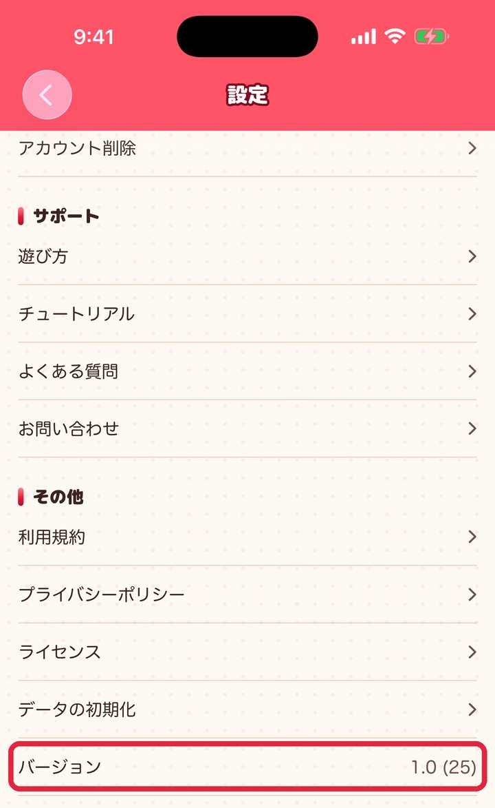

不具合のお問い合わせでは、アプリのバージョン・iPhoneの機種・iOSのバージョンを書いていただけると、原因を調べやすくなります。わからない項目は「不明」で大丈夫です。
お問い合わせのフォームから開いた場合は、このタブを閉じるとフォームに戻れます。
アプリのバージョン
-
ワードロワイヤルのホームで、右上の歯車のボタンをタップして「設定」を開きます。
-
「設定」をいちばん下までスクロールします。「その他」の「バージョン」の右に出ている数字が、アプリのバージョンです。かっこの中の数字まで、そのまま書いてください（例：1.0 (25)）。

iPhoneの機種とiOSのバージョン
-
iPhoneの「設定」アプリを開き、「一般」→「情報」の順にタップします（ワードロワイヤルの中の設定ではありません）。
-
「機種名」がiPhoneの機種（例：iPhone 15）、「iOSバージョン」がiOSのバージョン（例：26.1）です。